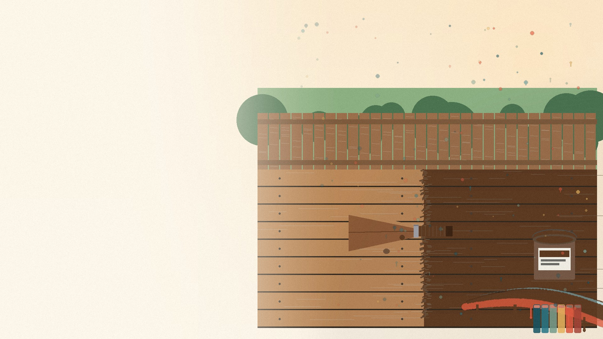

Outdoor Living
Deck & Patio Staining Services in Riverview, FL
Ayala Pro Painting provides professional deck and patio staining services for homeowners in Riverview, Florida and south Hillsborough County. Florida’s intense UV radiation, afternoon thunderstorms, and year-round humidity make outdoor wood surfaces especially vulnerable to fading, cracking, mildew, and premature aging. Our deck staining process includes thorough power washing, wood brightening, sanding, and application of premium UV-resistant stains and sealers that protect your investment and extend the life of your outdoor living spaces. Every project includes owner oversight and our workmanship warranty.
Signs You Need This Service
Is Your Deck Showing Signs of Florida Weather Damage?
Florida’s climate is particularly harsh on outdoor wood surfaces. If your deck or patio shows any of these signs, professional staining and sealing can restore its beauty and protect it from further damage:
- Gray, weathered appearance — the natural wood color has faded to a dull silver-gray
- Splintering or rough texture making barefoot walking uncomfortable or unsafe
- Green or black mildew/algae growth, especially in shaded areas
- Peeling or flaking from previous stain that was improperly applied or has deteriorated
- Water absorption — water soaks into the wood rather than beading on the surface
- Cracking or splitting boards from UV damage and moisture cycling

How We Work
How We Stain and Seal Your Deck
Inspection & Assessment
We evaluate your deck’s wood type, condition, existing finish, and structural integrity. We identify boards needing replacement and recommend the right stain type.
Power Washing
Professional-grade pressure washing removes dirt, mildew, algae, loose paint, and old stain. We use appropriate PSI for each wood type to clean without damaging the grain.
Wood Brightening
Apply wood brightener to restore the wood’s natural pH balance after pressure washing. This opens the grain for optimal stain absorption and brings back the warm wood tone.
Sanding & Prep
Sand rough spots, splinters, and raised grain. Replace any damaged boards. Tape off adjacent surfaces. Allow wood to dry completely (48-72 hours after washing).
Stain/Sealer Application
Apply your chosen stain or sealer using brush, roller, or spray technique appropriate for the product. We work with the grain and maintain a wet edge for uniform coverage.
Second Coat & Inspection
For semi-transparent and solid stains, apply a second coat after appropriate drying time. Final inspection for coverage uniformity, drips, and missed spots.
Products & Materials
Stain & Sealer Products We Recommend
We select stain and sealer products based on your wood type, desired appearance, and the level of UV/moisture protection needed for Florida conditions.
| Product / Brand | Details | Why We Use It |
|---|---|---|
| Sherwin-Williams | SuperDeck, WoodScapes | Excellent UV resistance, waterproofing, and color retention. Transparent, semi-transparent, and solid options. |
| Benjamin Moore | Arborcoat | Premium exterior stain with advanced UV and moisture protection. Superior color depth and penetration. |
| Specialty Sealers | Thompson’s WaterSeal, Defy Extreme, Ready Seal | Penetrating sealers for maximum water repellency. Ready Seal is oil-based and self-priming for easy maintenance coats. |
How Much Does Deck Staining Cost in Riverview, FL?
Deck staining costs depend on deck size, condition, product choice, and the amount of prep work required.
| Service Variant | Typical Range | Factors |
|---|---|---|
| Small Deck (under 200 sq ft) | $400 – $800 | Size, condition, product type |
| Medium Deck (200-400 sq ft) | $800 – $1,500 | Most common size in Riverview |
| Large Deck (400+ sq ft) | $1,500 – $3,000+ | Multi-level, complex railings |
| Fence Staining (per linear ft) | $3 – $8 / lin ft | Height, condition, product |
| Pergola / Gazebo | $500 – $1,500 | Size and detail level |
| Stain Stripping (add-on) | $2 – $4 / sq ft | Required when removing old solid stain |
Prices shown are estimates for typical Riverview-area projects. Your quote will be based on a free on-site assessment.
Why Choose Us
Why Choose Ayala Pro Painting for Deck Staining?
Proper Dry Time
We allow 48-72 hours after washing before staining. Rushing this step is the #1 cause of deck stain failure.
Right Product for Your Wood
Pressure-treated pine, cedar, redwood, and composite each require different products. We match the stain to your wood type.
Florida UV Protection
Every product we use includes UV inhibitors specifically rated for Florida’s extreme sun exposure.
Complete Prep Included
Power wash, brighten, sand, and repair are all included in our pricing. No surprise add-on charges for preparation.
Maintenance Guidance
We provide written care instructions and recommend a maintenance schedule to maximize the life of your stain.
Our Recent Work
Deck & Patio Projects in Riverview
Deck Staining
Riverview, FL
Fence Staining
Valrico, FL
Pergola Refinishing
Fish Hawk, FL
Frequently Asked Questions
Deck Staining Questions
Related Services